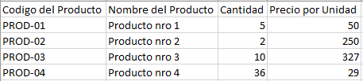
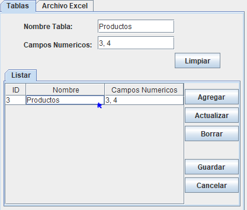
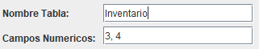
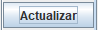
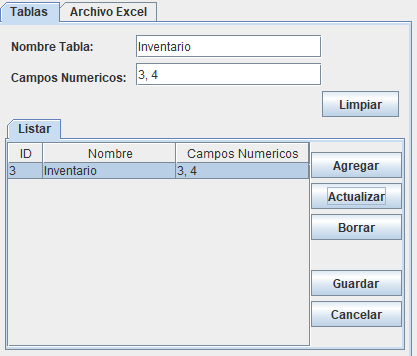

.png)

.png)
La primera vez que ejecute el programa le aparecerá un mensaje diciendo que se creó el archivo "Tablas.txt", este archivo será el que guarde la información de las tablas, favor de no eliminar o modificar información directamente en este archivo, ya que puede llevar a comportamientos no deseados en la ejecución del programa.
Para agregar una tabla a la lista debe llenar los campos Nombre Tabla
donde colocara el nombre de tabla y Campos Numéricos donde ingresara
las columnas que tienen valores numéricos
en la tabla iniciando en 1 y separados
por comas en caso de varias columnas tengan valores numéricos. Por ejemplo,
si tenemos la siguiente tabla de excel:

Para actualizar o modificar la información que hay en la lista se deben seguir los siguientes pasos:




Para borrar un elemento de la lista se deben seguir los siguientes pasos:
Para que no se pierdan las modificaciones que haya realizado debe darle al botón Guardar. De esta forma la información de la tabla se guardará en el archivo Tabla.txt
Si ha modificado la información de la tabla y quiere volver a tener los datos antes de su alteración y aún no ha guardado los nuevos cambios, presione el botón Cancelar para reiniciar la información de la tabla.